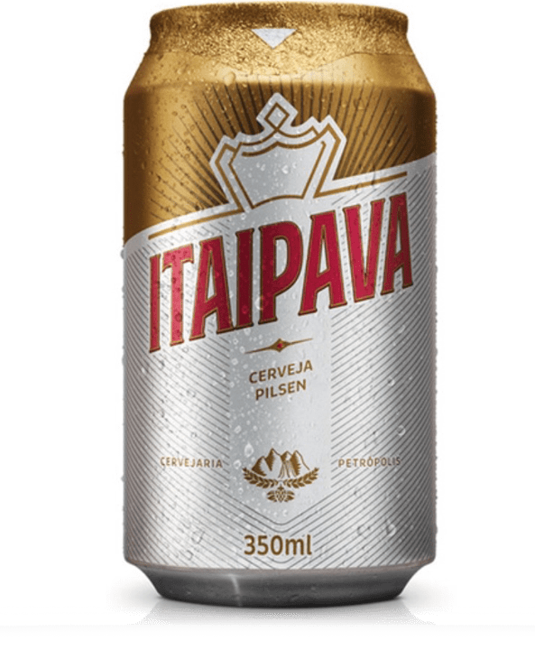
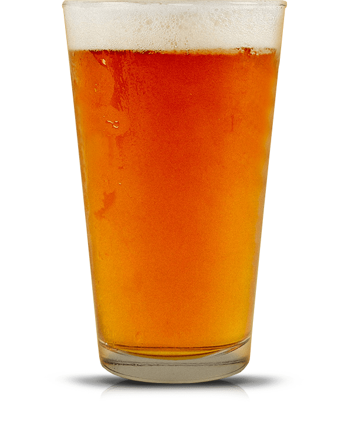

<!DOCTYPE html>
<html>
<head>
  <meta charset="UTF-8">
  <title>Five Boroughs Brewing Co. | Beer</title>
  <meta name="description" content="Five Boroughs Brewing Co. makes craft beer for New York City in our Sunset Park, Brooklyn brewery.">
  <link rel="icon" type="image/x-icon" href="../images/favicon.ico" />
  <meta name="viewport" content="width=device-width, initial-scale=1.0">
  <link href="../fonts/stylesheet.css" type="text/css" rel="stylesheet">
  <link href="../styles/reset.css" type="text/css" rel="stylesheet">
  <link href="../styles/stylesheet.css" type="text/css" rel="stylesheet">
  <link href="../styles/beer-page.css" type="text/css" rel="stylesheet">
</head>

<!-- @NOTE: body start off locked, and gets unlocked by the age gate -->
<body class="beer-page locked">
  <!-- WELCOME -->
  <section class="welcome">
    <div class="absolute-center">
      
      <h1>
        Five Boroughs Brewing Co.
        Makes craft beer that brings New York City together.
      </h1>
      <div class="age__gate">
        <div class="age__gate--question">Are you over 21?</div>
        <div class="age__gate--choice choice--yes">YES</div>
        <div class="age__gate--choice choice--no">NO</div>
        <div class="age__gate--disclaimer">You must be of legal drinking age to join us. Sorry, kids.</div>
      </div>
    </div>
  </section>
  <script src="../scripts/cookies.js"></script>
  <!-- Navigation -->
  <nav>
    <div class="limit-container">
      <a href="../"><span class="logo">Five Boroughs Brewing Co.</span></a>
      
      <div class="nav-close">+</div>
      <ul>
        <li class="active">
          <a href="../beer/">Beer</a>
        </li>
        <li>
          <a href="../quality/">Quality</a>
        </li>
        <li>
          <a href="../story/">Story</a>
        </li>
        <li>
          <a href="../culture/">Culture</a>
        </li>
        <li>
          <a href="../visit/">Visit</a>
        </li>
        <li class="nav-social-icons">
          <a target="_blank" class="icon icon-facebook" href="https://www.facebook.com/fiveboroughsbrewing/"></a>
          <a target="_blank" class="icon icon-instagram" href="https://www.instagram.com/fiveboroughsbrewing/"></a>
          <a target="_blank" class="icon icon-twitter" href="https://twitter.com/fiveboroughs"></a>
          <a target="_blank" class="icon icon-untappd" href="https://untappd.com/FiveBoroughsBrewingCo"></a>
        </li>
      </ul>
    </div>
  </nav>
  <div class="beer-navigator-placeholder">
    <!-- Used to hold the beer-navigator's place on the body when it goes sticky -->
  </div>
  <div class="beer-navigator">
    <ul>
      <li>Black Lager</li>
      <li>IPA</li>
      <li>Saison</li>
      <li>Pilsner</li>
      <li>Gose</li>
      <li>Maple Bier De Garde</li>
    </ul>
  </div>
  <!-- Beer Listing -->
  <section class="beers-list">
    <div class="limit-container">
      <!-- BLACK LAGER -->
      <div class="beers-list__beer">
        <div class="beer-details">
          <div class="beer-details--type">Core Five / German Style Lager</div>
          <div class="beer-details--name">Black Lager</div>
          <div class="beer-details--dek">Despite its dark color, this is a clean, light, and very drinkable beer. Malt forward with low bitterness and only a hint of noble hop aroma. Traditional German specialty malts give this beer its dark color and a complex, toasty flavor.</div>
          <div class="beer-details__meta">
            <div class="beer-details--overview">
              <div class="overview-label">Overview</div>
              <ul>
                <li>SERVING TEMP: 45-50°F</li>
                <li>GLASS: Flute, Pilsner</li>
                <li>ABV: 5.0%</li>
                <li>IBU: 24</li>
                <li>SRM: 26</li>
              </ul>
            </div>
            <div class="beer-details--ingregients">
              <div class="ingregients-label">Ingredients</div>
              <ul>
                <li>MALT: Pilsner, Carapils, Munich, Caramunich, Carafa Special</li>
                <li>BITTERING HOP: Horizon</li>
                <li>KETTLE HOP:  Hallertau</li>
              </ul>
            </div>
          </div>
        </div>
        <div class="beer-image">
          
        </div>
      </div>

      <!-- IPA -->
      <div class="beers-list__beer">
        <div class="beer-details">
          <div class="beer-details--type">Core Five / California Style Lager</div>
          <div class="beer-details--name">IPA</div>
          <div class="beer-details--dek">Our IPA is a modern take on the West Coast original. We add the majority of the hops late in the brewing process resulting in a huge hop aroma of citrus fruits balanced with herbs and pine. Red wheat and Munichmalt add some complexity and body, but this beer is all about hop aroma and bitterness.</div>
          <div class="beer-details__meta">
            <div class="beer-details--overview">
              <div class="overview-label">Overview</div>
              <ul>
                <li>SERVING TEMP: 50-55°F</li>
                <li>GLASS: Tulip, Nonic Pint</li>
                <li>ABV: 6.8%</li>
                <li>IBU: 62</li>
                <li>SRM: 4.2</li>
              </ul>
            </div>
            <div class="beer-details--ingregients">
              <div class="ingregients-label">Ingredients</div>
              <ul>
                <li>MALT:  2-Row, Munich, Red Wheat</li>
                <li>BITTERING HOP: CTZ</li>
                <li>KETTLE HOP: Chinook, Cascade</li>
                <li>WHIRLPOOL HOP: Cascade, Centennial</li>
                <li>DRY HOP: Cascade, Centennial, CTZ</li>
              </ul>
            </div>
          </div>
        </div>
        <div class="beer-image">
          
        </div>
      </div>

      <!-- SAISON -->
      <div class="beers-list__beer">
        <div class="beer-details">
          <div class="beer-details--type">Core Five / Belgian Farmhouse Style Ale</div>
          <div class="beer-details--name">Saison</div>
          <div class="beer-details--dek">Our take on the famous Belgian farmhouse style. Exceedingly dry and low in bitterness, this beer ismeant to showcase the complex aroma and flavor produced by traditional saison yeast strains. Aroma of white and black pepper, citrus, and lemongrass. White wheat lends a slightly tart finish while a small addition of rye accentuates the phenolic spiciness.</div>
          <div class="beer-details__meta">
            <div class="beer-details--overview">
              <div class="overview-label">Overview</div>
              <ul>
                <li>SERVING TEMP: 45-55°F</li>
                <li>GLASS: Tulip</li>
                <li>ABV: 6.0%</li>
                <li>IBU: 30</li>
                <li>SRM: 3.2</li>
              </ul>
            </div>
            <div class="beer-details--ingregients">
              <div class="ingregients-label">Ingredients</div>
              <ul>
                <li>MALT: Pilsner, White Wheat, Flaked Rye</li>
                <li>BITTERING HOP: East Kent Goldings</li>
                <li>KETTLE HOP: East Kent Goldings, Fuggles</li>
                <li>DRY HOP: East Kent Goldings, Fuggles</li>
              </ul>
            </div>
          </div>
        </div>
        <div class="beer-image">
          
        </div>
      </div>

      <!-- PILSNER -->
      <div class="beers-list__beer">
        <div class="beer-details">
          <div class="beer-details--type">Core Five / German Style Lager</div>
          <div class="beer-details--name">Pilsner</div>
          <div class="beer-details--dek">Despite its dark color, this is a clean, light, and very drinkable beer. Malt forward with low bitterness and only a hint of noble hop aroma. Traditional German specialty malts give this beer its dark color and a complex, toasty flavor.</div>
          <div class="beer-details__meta">
            <div class="beer-details--overview">
              <div class="overview-label">Overview</div>
              <ul>
                <li>SERVING TEMP: 45-50°F</li>
                <li>GLASS: Flute, Pilsner</li>
                <li>ABV: 5.0%</li>
                <li>IBU: 24</li>
                <li>SRM: 26</li>
              </ul>
            </div>
            <div class="beer-details--ingregients">
              <div class="ingregients-label">Ingredients</div>
              <ul>
                <li>MALT: Pilsner, Carapils, Munich, Caramunich, Carafa Special</li>
                <li>BITTERING HOP: Horizon</li>
                <li>KETTLE HOP:  Hallertau</li>
              </ul>
            </div>
          </div>
        </div>
        <div class="beer-image">
          
        </div>
      </div>

      <!-- GOSE -->
      <div class="beers-list__beer">
        <div class="beer-details">
          <div class="beer-details--type">Core Five / Czech Traditional Lager</div>
          <div class="beer-details--name">Gose</div>
          <div class="beer-details--dek">An incredibly drinkable low-ABV beer, our Gose is the perfect balance of acidic sourness and saltiness. Fermented cool with a traditional Kölsch yeast strain this beer finishes super clean with little to no bitterness.</div>
          <div class="beer-details__meta">
            <div class="beer-details--overview">
              <div class="overview-label">Overview</div>
              <ul>
                <li>SERVING TEMP: 40-45°F</li>
                <li>GLASS: Weizen, Stange, Chalice</li>
                <li>ABV: 4.0%</li>
                <li>IBU: 8</li>
                <li>SRM: 2.8</li>
              </ul>
            </div>
            <div class="beer-details--ingregients">
              <div class="ingregients-label">Ingredients</div>
              <ul>
                <li>MALT: Wheat, Pilsner</li>
                <li>BITTERING HOP: Czech Saaz</li>
              </ul>
            </div>
          </div>
        </div>
        <div class="beer-image">
          
        </div>
      </div>

      <!-- MAPLE BIER DE GARDE -->
      <div class="beers-list__beer">
        <div class="beer-details">
          <div class="beer-details--type">Seasonal / Lipsum Loren Style Lager</div>
          <div class="beer-details--name">Maple Bier De Garde</div>
          <div class="beer-details--dek">Our fall seasonal is a Biere de Garde brewed with 100% NYS maple syrup. Deep red in color, this beer has an aroma of earthy maple and dark fruits. A malty body, plenty of Belgian yeast character, and a maple finish make this the perfect beer for this time of year.</div>
          <div class="beer-details__meta">
            <div class="beer-details--overview">
              <div class="overview-label">Overview</div>
              <ul>
                <li>SERVING TEMP: 40-45°F<li>
                <li>GLASS: Tulip</li>
                <li>ABV: 7.5%</li>
                <li>IBU: 23</li>
                <li>SRM: 12</li>
              </ul>
            </div>
            <div class="beer-details--ingregients">
              <div class="ingregients-label">Ingredients</div>
              <ul>
                <li>GRAIN BILL: Pilsner, Abbey, Munich, Caraaroma</li>
                <li>BITTERING HOP: Magnum</li>
              </ul>
            </div>
          </div>
        </div>
        <div class="beer-image">
          
        </div>
      </div>
    </div>
  </section>
  <!-- Footer -->
  <footer>
    <section class="contact">
      <div class="limit-container">
        <div class="contact__left">
          Contact <br>
          Five Boroughs Brewing Co.
        </div>
        <div class="contact__right">
          <div class="contact--social">
            <div class="label">We're On</div>
            <div class="link link--facebook">
              <a target="_blank" href="https://www.facebook.com/fiveboroughsbrewing/">Facebook</a>
            </div>
            <div class="link link--instagram">
              <a target="_blank" href="https://www.instagram.com/fiveboroughsbrewing/">Instagram</a>
            </div>
            <div class="link link--twitter">
              <a target="_blank" href="https://twitter.com/fiveboroughs">Twitter</a>
            </div>
            <div class="link link--untappd">
              <a target="_blank" href="https://untappd.com/FiveBoroughsBrewingCo">Untappd</a>
            </div>
            <!-- Inquiries block shoul be in it's own thing one day? -->
            <div class="label label--divider">Inquiries</div>
            <div class="link link--sales">
              <a href="../sales/">Sales</a>
            </div>
            <div class="link link--media">
              <a href="../media/">Media</a>
            </div>
          </div>
          <div class="contact--mail">
            <div class="label">Email Five Boroughs</div>
            <div class="link">Cheers@fiveboroughs.com</div>
            <div class="label label--divider">Call Five Boroughs</div>
            <a href="tel:718-355-8575" style="text-decoration: none; cursor: pointer">
              <div class="link">718.355.8575</div>
            </a>
            <div class="label label--divider">Our Address</div>
            <a class="link--google-maps" target="_blank" href="https://goo.gl/maps/sY4S3z2UWym" style="text-decoration: none; cursor: pointer">
              <div class="link">215 47<sup>th</sup> Street</div>
              <div class="link">Brooklyn, NY 11220</div>
            </a>
          </div>
          <div class="contact--hours">
             <div class="label">Taproom Hours</div>
             <div class="link">Opening Soon</div>
            <!-- <div class="link">Monday&mdash;Thursday</div>
            <div class="link">11am&mdash;10pm</div>
            <div class="link">Friday&mdash;Saturday</div>
            <div class="link">11am&mdash;11pm</div>
            <div class="link">Sunday</div>
            <div class="link">11am&mdash;8pm</div> -->
          </div>
          <div class="check-twitter link link--twitter"><a href="https://twitter.com/fiveboroughs" target="_blank">Check Twitter For Holiday Hours and Special Event Closings</a></div>
        </div>
      </div>
    </section>
    <a class="map ready" target="_blank" href="https://goo.gl/maps/sY4S3z2UWym"></a>
    <section class="footer--light">
      <div class="limit-container">
        <div class="copyright">&copy; 2017 Five Boroughs Brewing Co.</div>
        <div class="back-to-top"></div>
      </div>
    </section>
  </footer>

  <script src="../scripts/smoothscroll.js"></script>
  <script src="../scripts/main.js"></script>
  <script src="../scripts/beer-page.js"></script>
</body>

</html>
